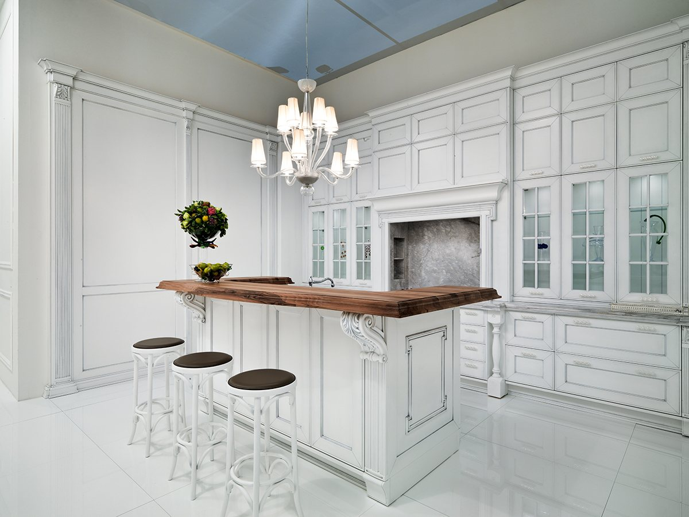
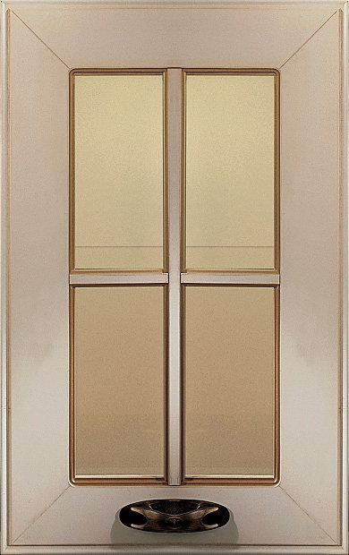
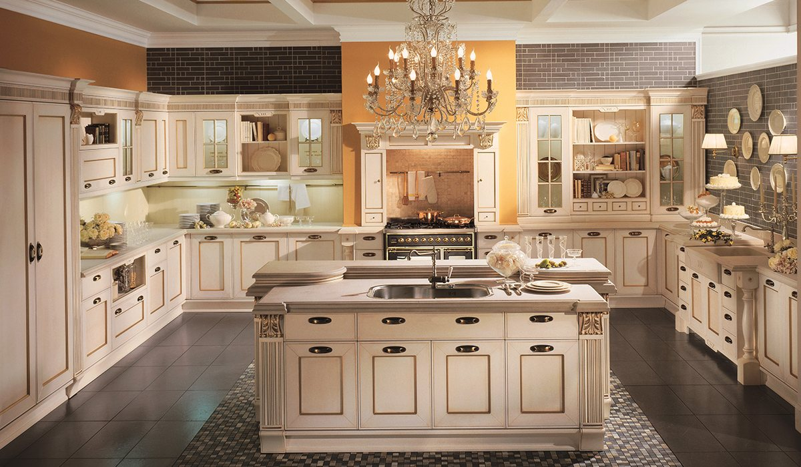
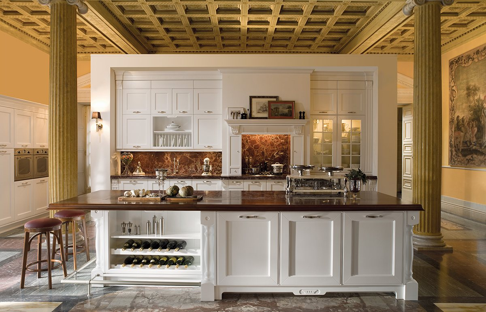
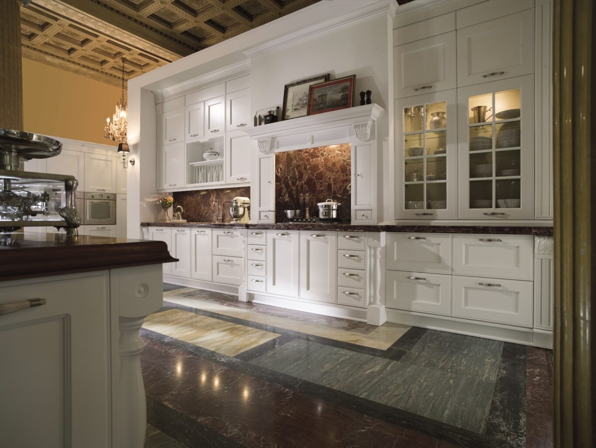
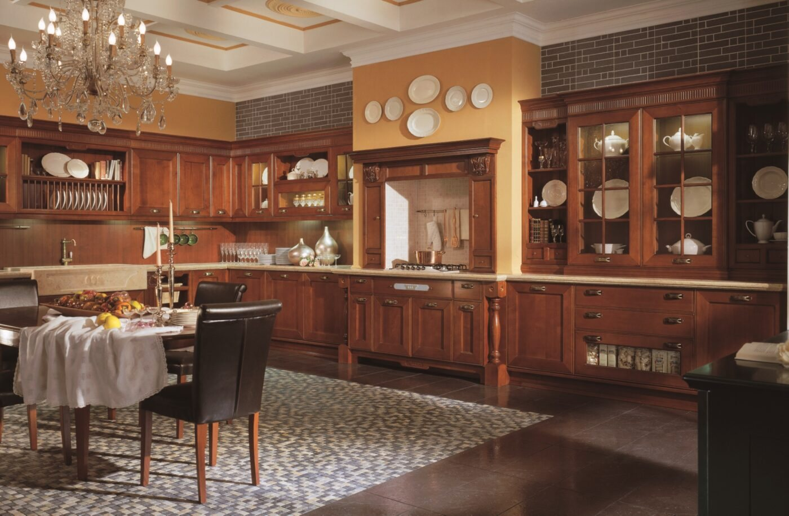
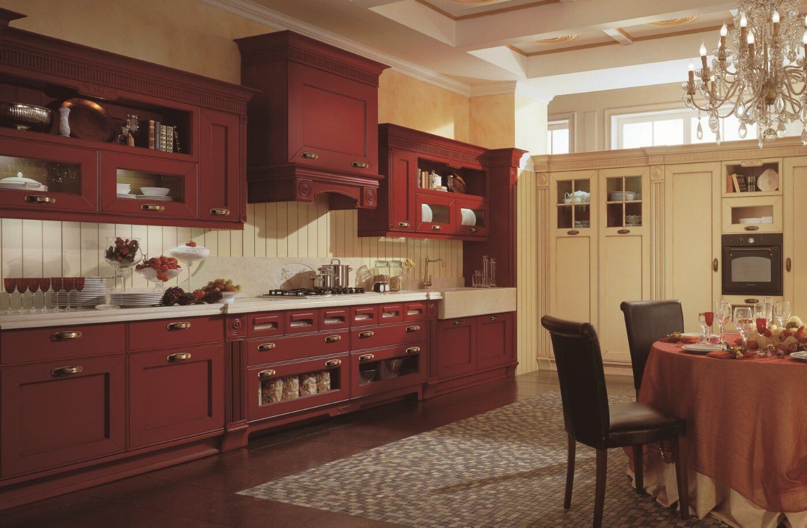
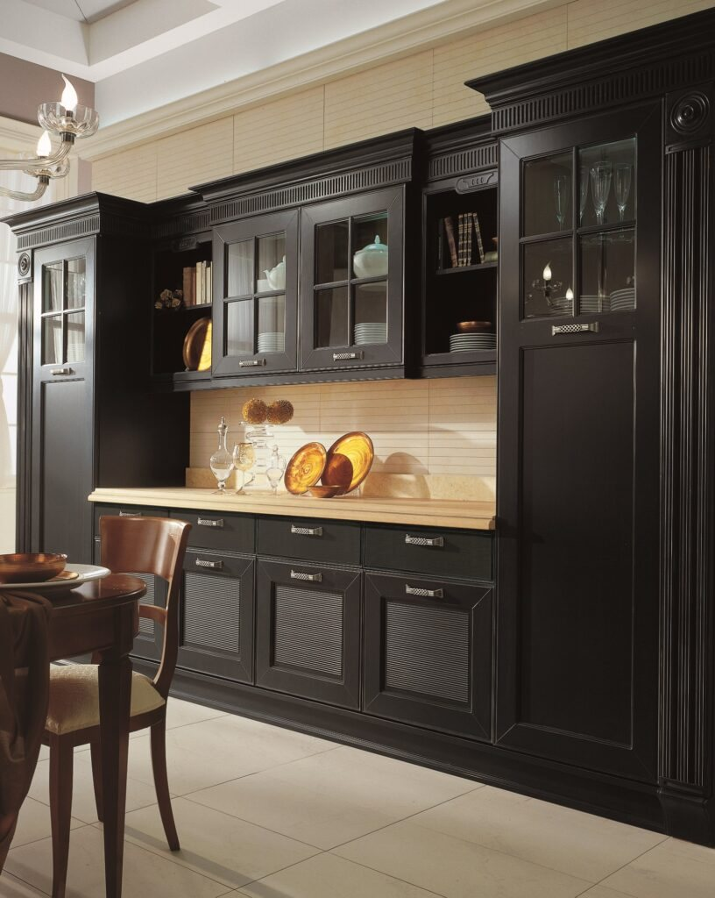

Aster Cucine
Кухня Opera
Классическая кухня с филёнчатыми фасадами, декоративными профилями и витринами.

Филёнки, карнизы и витрины
В Opera фабрика опирается на архитектуру итальянского Возрождения. Ритм шкафов задают филёнки и витрины. Пилястры, карнизы и обрамление вытяжки связывают отдельные блоки в единую композицию.
- Декор фасадов
- В отдельных композициях каталога филёнки обведены тонкой контрастной линией, а пилястры оформлены каннелюрами и резными капителями.
- Рабочая и обеденная зоны
- На фотографиях есть светлый остров с деревянной столешницей и модель с открытыми полками со стороны обеденной зоны.
- Отделка соседних помещений
- Мотивы филёнок и декоративных профилей повторяются в витринах и мебели за пределами кухни.

Композиции и детали






Фото и описание по материалам Aster Cucine.
Обсудить проект кухни
Подберём конфигурацию и отделки для Вашего проекта.